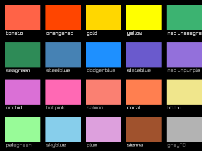
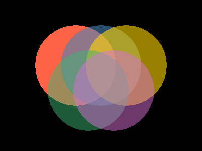
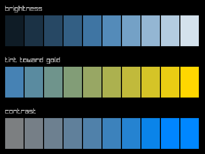
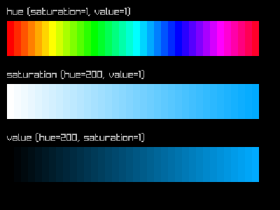
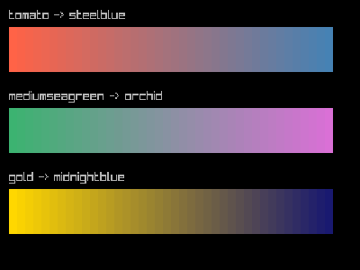

One of raylibr’s nicest features is that R’s 657 built-in color names work everywhere a color is expected. This guide covers the full color system.
R color names
Any function that takes a color argument accepts an R color name as a string:
colors <- c(
"tomato", "orangered", "gold", "yellow",
"mediumseagreen", "seagreen", "steelblue", "dodgerblue",
"slateblue", "mediumpurple", "orchid", "hotpink",
"salmon", "coral", "khaki", "palegreen",
"skyblue", "plum", "sienna", "grey70"
)
raylibr_screenshot(function() {
cols <- 5L
w <- 70L
h <- 50L
pad <- 10L
for (i in seq_along(colors)) {
row <- (i - 1L) %/% cols
col <- (i - 1L) %% cols
x <- pad + col * (w + pad)
y <- pad + row * (h + pad + 14L)
draw_rectangle(as.integer(x), as.integer(y), w, h, colors[i])
draw_text(colors[i], as.integer(x + 2L), as.integer(y + h + 1L), 10L, "grey70")
}
})
This includes all of colors() from base R —
"red", "steelblue", "grey90",
"antiquewhite", and 653 more.
The color struct
For precise control, construct colors with RGBA values (0–255):
col <- color(255, 100, 50, 255)
col$r
#> [1] 255
col$a
#> [1] 255Convert from other representations with as_color():
Transparency
color_alpha() creates a transparent version of any
color. The alpha ranges from 0 (invisible) to 1 (opaque):
raylibr_screenshot(function() {
draw_circle(150L, 130L, 80.0, "tomato")
draw_circle(200L, 130L, 80.0, color_alpha("steelblue", 0.6))
draw_circle(250L, 130L, 80.0, color_alpha("gold", 0.6))
draw_circle(175L, 180L, 80.0, color_alpha("mediumseagreen", 0.5))
draw_circle(225L, 180L, 80.0, color_alpha("orchid", 0.5))
})
fade() does the same thing as color_alpha()
— both set the alpha channel.
Color manipulation
raylibr provides functions to adjust colors:
raylibr_screenshot(function() {
base <- "steelblue"
w <- 36L
h <- 60L
# Brightness: -255 to 255
draw_text("brightness", 10L, 10L, 14L, "grey70")
for (i in 0:9) {
b <- -200 + i * 44
draw_rectangle(10L + as.integer(i) * (w + 2L), 30L, w, h,
color_brightness(base, b / 255))
}
# Tint
draw_text("tint toward gold", 10L, 110L, 14L, "grey70")
for (i in 0:9) {
frac <- i / 9
draw_rectangle(10L + as.integer(i) * (w + 2L), 130L, w, h,
color_lerp(base, "gold", frac))
}
# Contrast: -255 to 255
draw_text("contrast", 10L, 210L, 14L, "grey70")
for (i in 0:9) {
c_val <- -200 + i * 44
draw_rectangle(10L + as.integer(i) * (w + 2L), 230L, w, h,
color_contrast(base, c_val / 255))
}
})
-
color_brightness(color, factor)— lighten (positive) or darken (negative) -
color_contrast(color, factor)— increase or decrease contrast -
color_tint(color, tint)— tint a color toward another
HSV color space
color_from_hsv() creates colors from hue (0–360),
saturation (0–1), and value (0–1). This is great for generating color
ramps:
raylibr_screenshot(function() {
n <- 36L
w <- as.integer(380 / n)
# Hue rainbow
draw_text("hue (saturation=1, value=1)", 10L, 10L, 14L, "grey70")
for (i in 0:(n - 1L)) {
draw_rectangle(10L + as.integer(i) * w, 30L, w, 50L,
color_from_hsv(i * 360.0 / n, 1.0, 1.0))
}
# Saturation ramp
draw_text("saturation (hue=200, value=1)", 10L, 100L, 14L, "grey70")
for (i in 0:(n - 1L)) {
draw_rectangle(10L + as.integer(i) * w, 120L, w, 50L,
color_from_hsv(200.0, i / (n - 1.0), 1.0))
}
# Value ramp
draw_text("value (hue=200, saturation=1)", 10L, 190L, 14L, "grey70")
for (i in 0:(n - 1L)) {
draw_rectangle(10L + as.integer(i) * w, 210L, w, 50L,
color_from_hsv(200.0, 1.0, i / (n - 1.0)))
}
})
Convert back with color_to_hsv():
color_to_hsv("tomato")
#> x y z
#> 9.1304340 0.7215686 1.0000000Interpolation
color_lerp() blends between two colors. Use it to create
smooth gradients:
raylibr_screenshot(function() {
n <- 40L
w <- as.integer(380 / n)
from <- "tomato"
to <- "steelblue"
draw_text("tomato -> steelblue", 10L, 10L, 14L, "grey70")
for (i in 0:(n - 1L)) {
draw_rectangle(10L + as.integer(i) * w, 30L, w, 50L,
color_lerp(from, to, i / (n - 1.0)))
}
from2 <- "mediumseagreen"
to2 <- "orchid"
draw_text("mediumseagreen -> orchid", 10L, 100L, 14L, "grey70")
for (i in 0:(n - 1L)) {
draw_rectangle(10L + as.integer(i) * w, 120L, w, 50L,
color_lerp(from2, to2, i / (n - 1.0)))
}
from3 <- "gold"
to3 <- "midnightblue"
draw_text("gold -> midnightblue", 10L, 190L, 14L, "grey70")
for (i in 0:(n - 1L)) {
draw_rectangle(10L + as.integer(i) * w, 210L, w, 50L,
color_lerp(from3, to3, i / (n - 1.0)))
}
})
color_alpha_blend() blends a foreground color over a
background, respecting the foreground’s alpha channel — useful for
compositing.